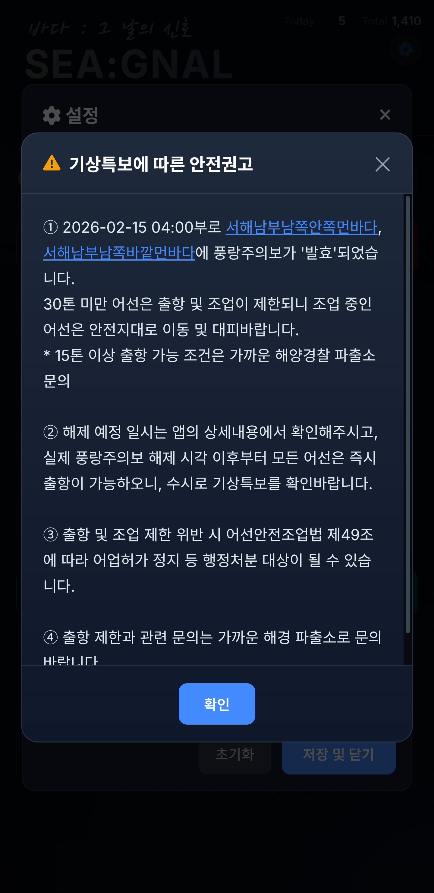
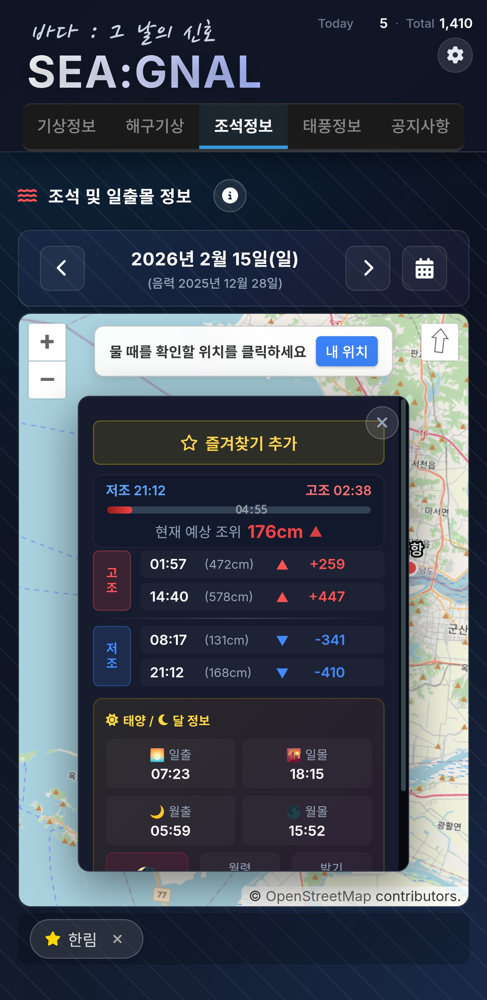

03어떻게 보이나
특보·해점·지도, 세 화면에서 한눈에 보고 바로 행동할 수 있게 — 번호로 짚어보는 실제 화면
1특보정보

1
2
3
4
5
6
7
7푸시 알림 내역
발효·격상·해제 변경을 즉시 통지
2임의 해점 종합

1
2
3
4
5
6
7
7천문(일출몰) / 월상
해 뜨고 지는 시각·달 위상
3해양종합정보 지도
1파고 색상맵
전 해역 파고를 색으로 (0~5.5m)
4레이어 토글
유향유속·풍향·파향·물빠짐·CCTV